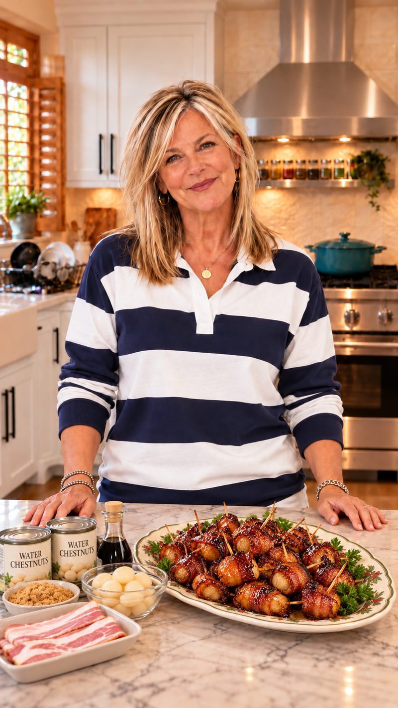
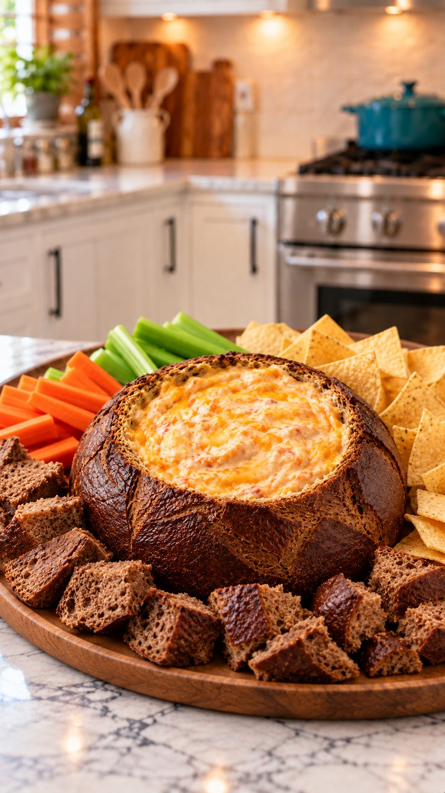

The recipes you grew up with, back on the table.
Pull up a stool in Ruby's den. She's digging through the recipe box for the party food, weeknight dinners and family favorites from the 70s, 80s and 90s, and she's got opinions about all of them.

Fresh out of the recipe box

Bacon-Wrapped Water Chestnuts
Salty, sweet and crunchy. Every 70s holiday party had a tray of these.

Southwest Dip in a Bread Bowl
Four ingredients, one pumpernickel loaf, and hot cheesy deliciousness.

Corned Beef Hash with Baked Eggs
Straight out of a 1947 cookbook, rewritten for today's kitchen.

Peppered Bacon BLT
The secret to the golden crust? Mayo in the skillet. Don't knock it.

"Around here, we dig up the recipes people forgot they loved."
Ruby
Ruby isn't a trained chef, and she'll be the first to tell you. She's a woman in her sixties who loves good food, old music, a glass of wine and a full kitchen. Every recipe here comes from a real family recipe box or a classic cookbook, tested and written so you can make it tonight.
More about RubyWhat's cooking at Ruby's
Recipe Rewind
Old favorites, family recipes and party food straight out of another decade.
Ruby's Remix
A classic with a little update, without losing what made it great.
Kitchen Rewind
Grandma's tricks and old-school hacks. Do they still work?
Sip & Spin
A drink paired with the spirit of a favorite musical era.
Remember This?
Forgotten foods, gadgets and kitchen trends that bring it all back.